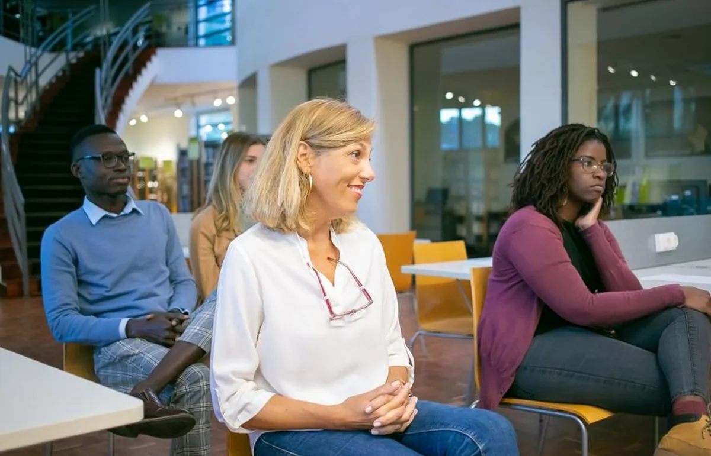
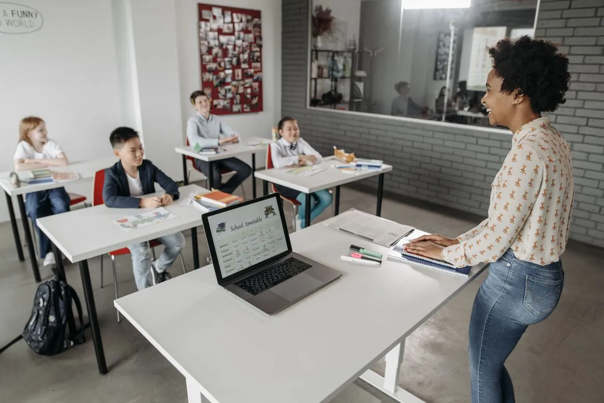
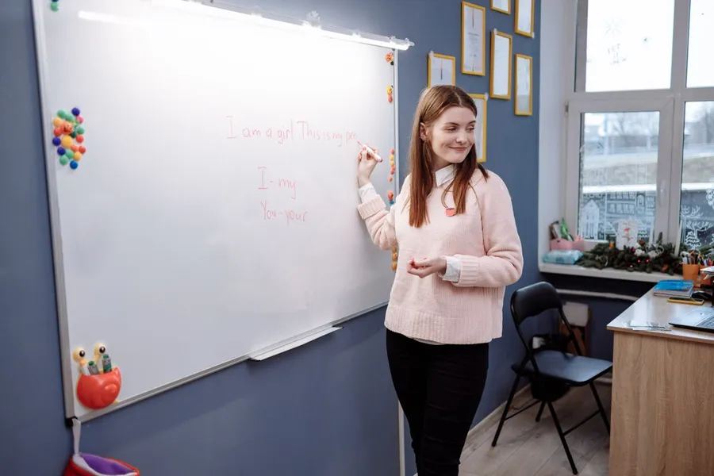

Future-Ready Leadership
Help managers navigate change, make responsible decisions and turn strategic priorities into focused team action.
View programmeNexora Practical learning, designed around meaningful goals.
View programmesProject-led education for a changing world
Nexora designs practical learning experiences that turn important questions into confident action—for organisations, teams and independent learners.

Learning principle 01Make before you memorise.
A clear path from question to outcome
A practical framework for purposeful learningAbout Nexora
We design learning around useful questions, active participation and thoughtful feedback.
Our role is to make the journey clear without removing the challenge that makes learning meaningful.
Meet Nexora
Not education as a finish line. Education as a way of moving through the world.
Featured programmes
Each pathway can be shaped around the audience, context and outcomes that matter.
Help managers navigate change, make responsible decisions and turn strategic priorities into focused team action.
View programmeBuild confidence in research, service design and responsible technology through a practical improvement brief.
View programme
Explore how places adapt to change, then translate evidence into a grounded proposal for local action.
View programmeHow learning works
A connected experience built around practice, conversation and reflection.
Explore the experienceLearning starts with a clear question, a real audience and an outcome worth working towards.
Learners build, test and improve useful work instead of collecting disconnected information.
Frequent, achievable outputs create momentum and make feedback easier to use.
Structured reflection helps learners recognise what changed and decide what to do next.
Start a conversation
Tell us who the learning is for, what needs to change and what a useful outcome would look like.
Talk to an adviser